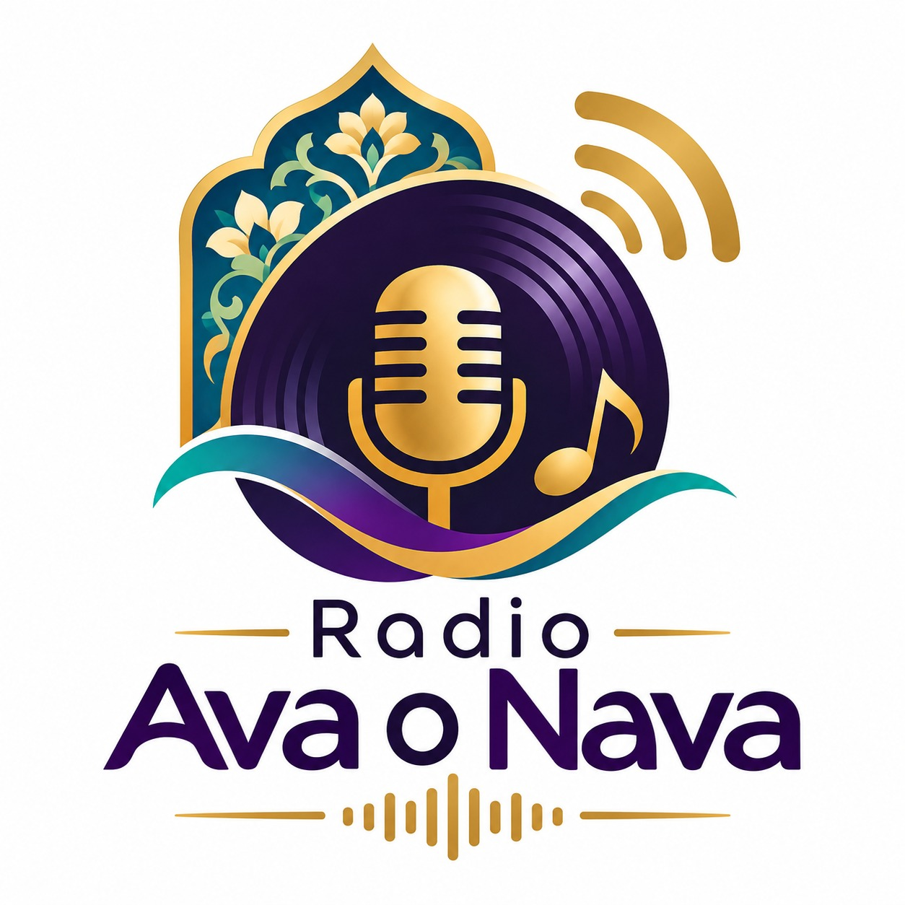

رادیو آوا و نوا
رادیوی آنلاین و زنده، برای شنیدن لحظههای ناب موسیقی و صدا
آماده شنیدن
برای گوش دادن، دکمه پخش را بزنید.
پخش فقط زمان برگزاری برنامه فعال است. اگر رادیو خاموش بود، هنگام برنامه دوباره مراجعه کنید.

رادیوی آنلاین و زنده، برای شنیدن لحظههای ناب موسیقی و صدا
برای گوش دادن، دکمه پخش را بزنید.
پخش فقط زمان برگزاری برنامه فعال است. اگر رادیو خاموش بود، هنگام برنامه دوباره مراجعه کنید.